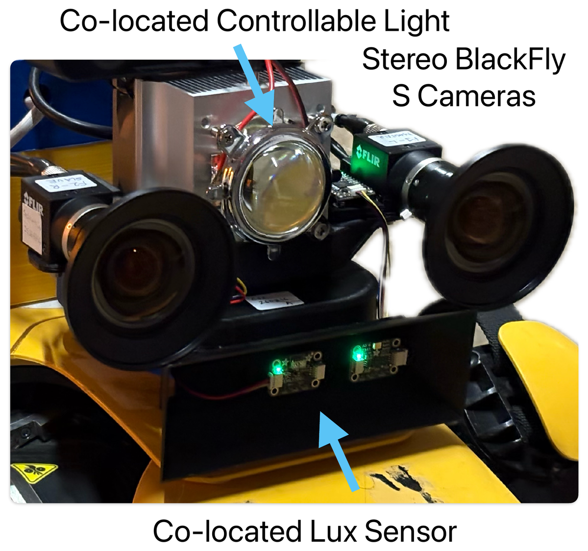
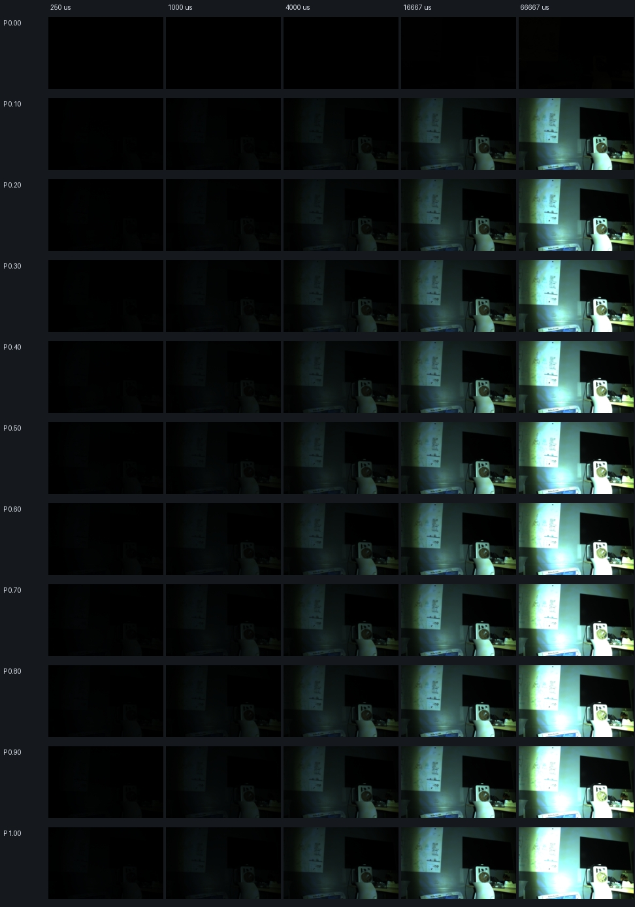
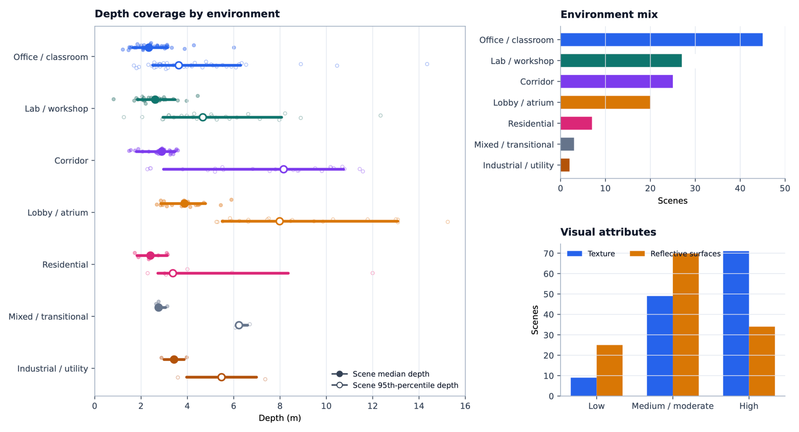
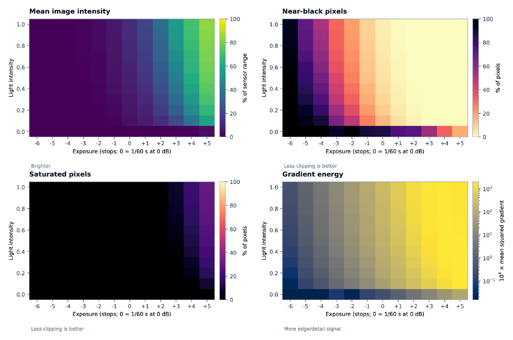

01
Controlled fixed-view + mobile data
136 fixed-view scenes over exposure, gain, and active-light sweeps, plus 18 repeatable mobile sequences with synchronized stereo, lux, LiDAR, and odometry.
Robot vision in low-light environments depends not only on the scene, but also on how the image is acquired. Exposure, gain, and onboard illumination can change the information available to feature extraction, tracking, localization, and state estimation. Existing field-robotics datasets provide valuable environmental diversity, but they rarely vary these sensing parameters systematically while holding geometry fixed.
CLPV is a controlled dataset and capture platform for studying this image-formation problem. Its fixed-view component sweeps camera exposure, gain, and co-located illumination over unchanged scenes; its mobile component records repeatable robot routes with synchronized stereo, LiDAR, odometry, and illuminance measurements. A co-located relighting model can additionally generate alternative light levels from the fixed-exposure mobile sequences while preserving the exact recorded viewpoint and motion.
Numbers below describe the current processed subset in the workshop paper, not the final frozen release.
136 fixed-view scenes over exposure, gain, and active-light sweeps, plus 18 repeatable mobile sequences with synchronized stereo, lux, LiDAR, and odometry.
A software-controllable, co-located illuminator and capture stack provide remotely commanded light intensity, synchronized stereo acquisition, sensor readback, and ROS-based tooling.
Fixed-exposure mobile sequences captured at 50% light can be expanded with CLID relighting, enabling multiple illumination variants on the exact same recorded camera motion, timing, scene state, LiDAR, and odometry.

The same co-located camera–light assembly is used for fixed-view and mobile collection. The system combines synchronized FLIR BlackFly S stereo cameras, a software-controlled light with a 60° beam, a co-located VEML7700 illuminance sensor, and an Ouster OS0-128 LiDAR. A ZED 2i provides depth context for fixed-view scenes.
Every primary observation is stored as a hardware-synchronized stereo pair. Mobile LiDAR timing is synchronized to the acquisition Jetson using PTP, and the release records stereo, odometry, camera state, light command, lux, and timestamps for cross-modal association.
For every static scene, CLPV holds viewpoint and geometry fixed while traversing the Cartesian acquisition grid exposure × gain × active-light intensity.

A single scene changes from severe underexposure through useful intermediate conditions to saturation as exposure and co-located illumination increase. Each scene additionally includes ambient and per-intensity VEML7700 lux measurements.
A LiDAR-SLAM teach-and-repeat workflow revisits the same route under two complementary physical baselines: a controlled run at 4000 µs exposure, 12 dB gain, and 50% light, and an auto-exposure run with the co-located light disabled. The current subset contains 18 sequences and 13,667 stereo pairs.
The 50%-light sequence is also the reference input to CLID. CLID decomposes each observation into an ambient component and a co-located light contribution, then synthesizes requested light levels. These derived variants preserve the exact recorded camera motion, frame timing, scene state, LiDAR, and odometry; only the modeled active-light contribution changes.
CLPV is presented as a controlled data resource rather than a leaderboard tied to a single algorithm. The paper characterizes scene coverage, photometric range, acquisition integrity, and repeatability.

Scene and depth coverage. The current fixed-view subset spans offices/classrooms, labs/workshops, corridors, lobbies/atria, residential, transitional, and utility spaces, with compact scenes and longer-range corridor/atrium views. Semantic attributes are dataset descriptors rather than task ground truth.

Photometric response. Increasing exposure and active light moves observations from near-black toward greater intensity and gradient energy, and eventually toward clipping. The effect of the co-located light is most visible at intermediate exposures; the lowest settings remain signal-limited and the highest increasingly saturate.
| Quantity | Current value |
|---|---|
| Fixed-view scenes | 136 |
| Exposure settings | 5 |
| Gain settings | 4 |
| Physical light settings | 11 (0–100%) |
| Settings per fixed scene | 220 |
| Expected fixed stereo pairs | 29,920 |
| Expected fixed images | 59,840 |
| Mobile sequences | 18 |
| Mobile stereo pairs | 13,667 |
| Physical sequence baselines | Fixed exposure; auto exposure |
| Reference light level | 50% |
| Fixed-view lux measurements | Ambient and per light intensity |
| Auxiliary mobile streams | LiDAR, odometry, and VEML7700 lux |
| Synchronization | Stereo hardware trigger; LiDAR–Jetson PTP |
| Calibration | Full stereo intrinsics, distortion, and extrinsics |
The workshop paper states that collection is ongoing toward approximately 500 fixed-view scenes and 50 robot sequences. Final counts should be regenerated from the frozen release manifest before public launch.
Fixed-view audits cover grid and stereo-pair completeness, hardware-trigger consistency, camera-setting readback, light settling, corrupted files, and scene motion. Mobile audits cover stereo continuity, dropped frames, LiDAR and odometry rates, PTP offset, cross-modal timestamp residuals, and valid measurement association. Checksums and audit tooling are intended to ship with the release.
For repeatable routes, LiDAR-SLAM localization is used to align repeats to the taught route and quantify cross-track displacement, heading difference, path-length ratio, and speed distribution. These metrics measure how closely physical repeats revisit the same route without treating them as frame-identical.
@inproceedings{clpv2026,
title = {CLPV: Dataset of Controlled Co-Located Lighting and Photometric Variation for Robot Vision},
author = {Turkar, Yash and Sadeghi, Shekoufeh and Shouvik and Dantu, Karthik},
booktitle = {IROS 2026 Workshop on Data in Field Robotics},
year = {2026}
}